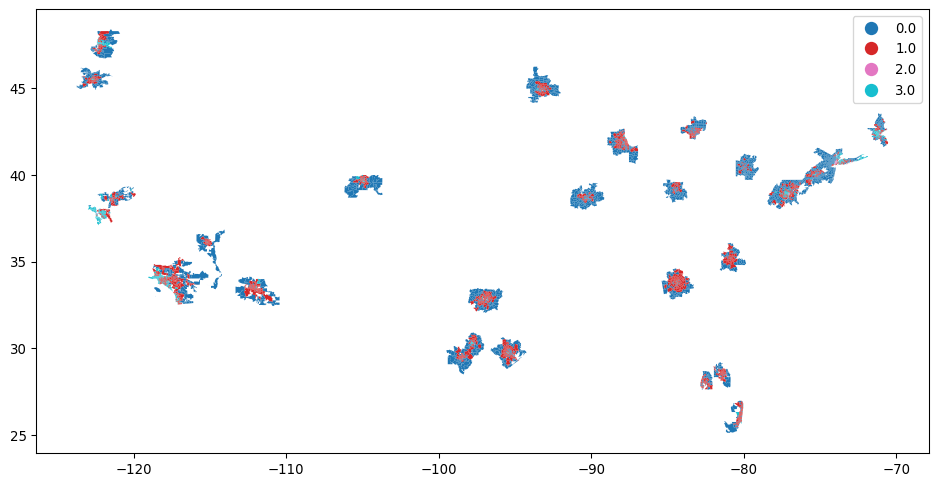
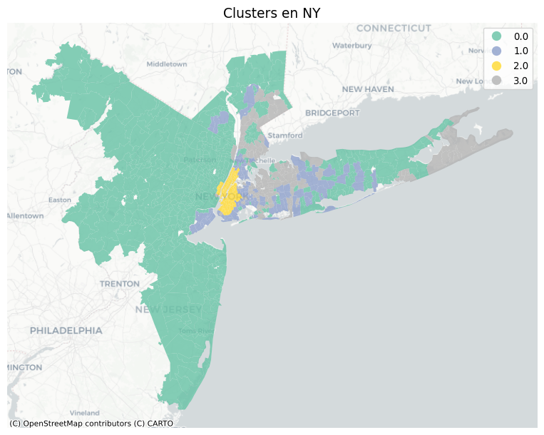
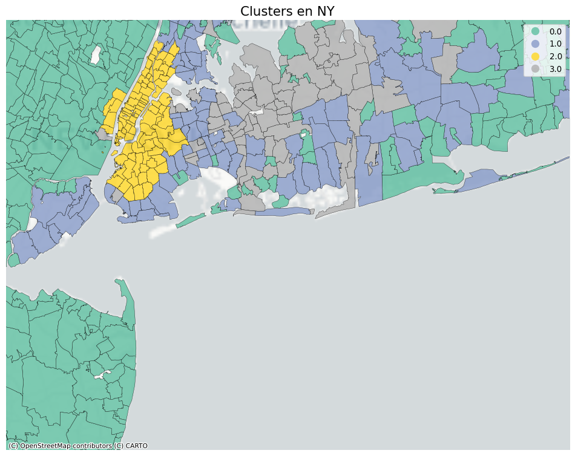
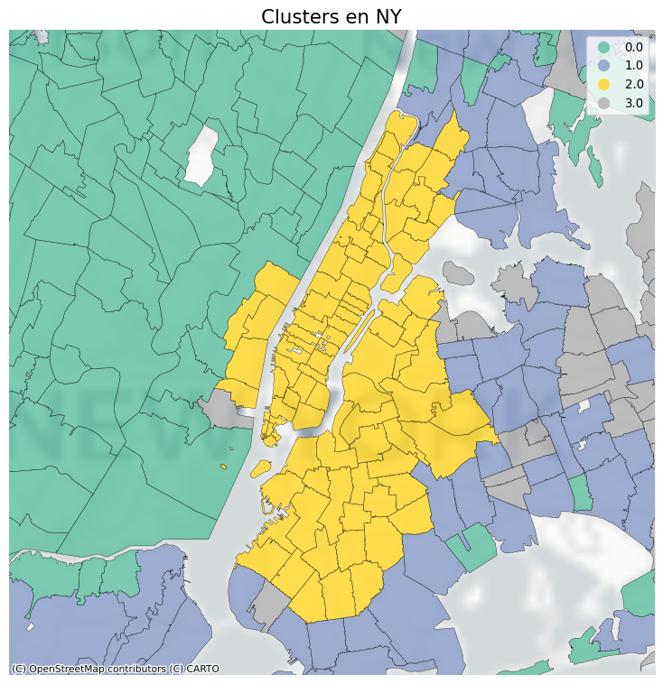

[0.34685209 0.23041372 0.11418052 0.06327196 0.04944255 0.04276308
0.02503939 0.02146856 0.01447887]
[0.34685209 0.57726581 0.69144634 0.7547183 0.80416085 0.84692393
0.87196332 0.89343188 0.90791075]US Housing Market Clustering & PCA
Abstract
This report segments US housing markets using PCA and K-Means over market, POI, and demographic features. We document the methodology, interpret principal components, profile clusters, and map their spatial distribution.
Project Overview
This report presents a data-driven segmentation of the US housing market at ZIP/city level. We combine housing indicators (e.g., median sale/list prices, inventory, DOM) with points of interest (POIs) from OSM and demographics from ACS/Census. Our workflow focuses on standardization → dimensionality reduction (PCA) → clustering (K-Means) and geospatial visualization. We keep the code unchanged and emphasize clear, reproducible interpretation of each step.
Key questions we address: - Which latent dimensions best summarize variation across locations? - How many distinct market segments (clusters) emerge? - What characterizes each cluster in terms of market signals, POIs, and demographics? - Where are these clusters located geographically?
Note: This document does not include supervised price prediction. The emphasis is on structure discovery and interpretation.
Data Sources and Loading
We start by loading the main dataset from Kaggle (HousingTS) and merging auxiliary features when available (POI counts from OSM and ACS/Census demographics). We ensure identifiers (e.g., ZIP/city, date) are consistent and that time-dependent features can be aggregated at the desired granularity.
Analysis Step
Below we execute the corresponding step and display intermediate outputs for inspection and traceability.
Analysis Step
Below we execute the corresponding step and display intermediate outputs for inspection and traceability.
Principal Component Analysis (PCA)
We apply PCA to capture the dominant variation across locations while retaining a predefined proportion of explained variance (e.g., 90%). Interpreting PC1 and PC2 helps summarize broad market/demographic/POI gradients. Scatter plots in PCA space offer a compact view of separation tendencies prior to clustering.
Choosing the Number of Clusters (K)
We evaluate candidate values of K (e.g., inertia curves and/or silhouette checks) to balance parsimony and segmentation quality. The selected K is used to fit K-Means in the reduced PCA space, stabilizing clusters and improving separation.
Componentes PCA: 9
Varianza explicada por componente: [0.34685209 0.23041372 0.11418052 0.06327196 0.04944255 0.04276308
0.02503939 0.02146856 0.01447887]
Varianza explicada acumulada: [0.34685209 0.57726581 0.69144634 0.7547183 0.80416085 0.84692393
0.87196332 0.89343188 0.90791075]Principal Component Analysis (PCA)
We apply PCA to capture the dominant variation across locations while retaining a predefined proportion of explained variance (e.g., 90%). Interpreting PC1 and PC2 helps summarize broad market/demographic/POI gradients. Scatter plots in PCA space offer a compact view of separation tendencies prior to clustering.
plt.figure(figsize=(8,6))
plt.scatter(pca_df["PC1"], pca_df["PC2"], s=8, alpha=0.5)
plt.xlabel("PC1")
plt.ylabel("PC2")
plt.title("Espacio PCA = PC1 vs PC2")
plt.show()
Choosing the Number of Clusters (K)
We evaluate candidate values of K (e.g., inertia curves and/or silhouette checks) to balance parsimony and segmentation quality. The selected K is used to fit K-Means in the reduced PCA space, stabilizing clusters and improving separation.
k con mejor silueta: 4
Principal Component Analysis (PCA)
We apply PCA to capture the dominant variation across locations while retaining a predefined proportion of explained variance (e.g., 90%). Interpreting PC1 and PC2 helps summarize broad market/demographic/POI gradients. Scatter plots in PCA space offer a compact view of separation tendencies prior to clustering.
Principal Component Analysis (PCA)
We apply PCA to capture the dominant variation across locations while retaining a predefined proportion of explained variance (e.g., 90%). Interpreting PC1 and PC2 helps summarize broad market/demographic/POI gradients. Scatter plots in PCA space offer a compact view of separation tendencies prior to clustering.
station 6.292687
restaurant 6.033795
supermarket 5.931101
bank 5.798149
park 5.090172
hospital 4.288910
school 3.899366
median_list_ppsf 2.905003
median_ppsf 2.526744
bus 2.178003
Median Home Value 1.285565
price 1.164426
median_sale_price 1.155048
Total Housing Units 0.807132
mall 0.791088
median_list_price 0.729817
Total Labor Force 0.695403
Median Commute Time 0.679908
Per Capita Income 0.656566
Total School Enrollment 0.654586
dtype: float64Data Preparation and Standardization
Before multivariate analysis, features are standardized using z-scores to place all variables on comparable scales. This is crucial for PCA and K-Means, which are sensitive to differences in units and magnitude.
Analysis Step
Below we execute the corresponding step and display intermediate outputs for inspection and traceability.
| station | restaurant | supermarket | bank | park | hospital | school | median_list_ppsf | median_ppsf | bus | Median Home Value | price | median_sale_price | Total Housing Units | mall | median_list_price | Total Labor Force | Median Commute Time | Per Capita Income | Total School Enrollment | |
|---|---|---|---|---|---|---|---|---|---|---|---|---|---|---|---|---|---|---|---|---|
| cluster | ||||||||||||||||||||
| 0 | -0.22 | -0.26 | -0.36 | -0.29 | -0.37 | -0.32 | -0.36 | -0.34 | -0.33 | -0.27 | -0.42 | -0.30 | -0.30 | -0.72 | -0.28 | -0.24 | -0.72 | -0.71 | -0.30 | -0.71 |
| 1 | -0.07 | -0.08 | 0.04 | -0.03 | 0.06 | 0.03 | 0.11 | -0.20 | -0.18 | 0.04 | -0.12 | -0.23 | -0.22 | 0.98 | 0.12 | -0.19 | 1.00 | 1.00 | -0.10 | 1.01 |
| 2 | 4.96 | 4.89 | 4.86 | 4.80 | 4.51 | 4.14 | 3.95 | 3.33 | 3.09 | 2.96 | 1.70 | 1.70 | 1.69 | 1.21 | 1.77 | 1.32 | 0.98 | 0.93 | 1.15 | 0.85 |
| 3 | 0.12 | 0.34 | 0.42 | 0.35 | 0.46 | 0.42 | 0.40 | 1.26 | 1.22 | 0.41 | 1.67 | 1.50 | 1.50 | -0.03 | 0.45 | 1.21 | -0.03 | -0.05 | 1.24 | -0.07 |
Principal Component Analysis (PCA)
We apply PCA to capture the dominant variation across locations while retaining a predefined proportion of explained variance (e.g., 90%). Interpreting PC1 and PC2 helps summarize broad market/demographic/POI gradients. Scatter plots in PCA space offer a compact view of separation tendencies prior to clustering.
import geopandas as gpd
zcta = gpd.read_file("C:/EMILIO/PROYECTOS PERSONALES EN PYTHON/US_housing_clustering/data/Shapefiles/tl_2020_us_zcta520.shp")
zcta.head()
#ajustamos el dataframe para tener solo el zipcode y el cluster asociado.
df_map = pca_df[["zipcode", "cluster","city"]].drop_duplicates()
#Como en el archivo .shp tiene el zipcode con 5 dígitos hay que actualizar la variable en este df para matchear
df_map["zipcode_str"] = df_map["zipcode"].astype(str).str.zfill(5)
#renombramos la variable para que tengan el mismo nombre en ambos datframes.
zcta = zcta.rename(columns={"ZCTA5CE20": "zipcode_str"})
#mergeamos para tenerlo en una sola BBDD
gdf = zcta.merge(df_map, on="zipcode_str", how="left")
gdf.plot(column="cluster", categorical=True, legend=True, figsize=(12,8))
Analysis Step
Below we execute the corresponding step and display intermediate outputs for inspection and traceability.
# Filtrar por una ciudad
ciudad = "NY" # cámbialo por el nombre de la ciudad que te interese
gdf_city = gdf[gdf["city"] == ciudad].copy()
# Revisar cuántos clusters hay dentro de esa ciudad
print(gdf_city["cluster"].value_counts())
import matplotlib.pyplot as plt
fig, ax = plt.subplots(figsize=(10, 8))
gdf_city.plot(column="cluster", categorical=True, legend=True, cmap="Set2", ax=ax)
ax.set_title(f"Clusters en {ciudad}", fontsize=14)
ax.axis("off")
plt.show()cluster
0.0 535
3.0 109
2.0 93
1.0 92
Name: count, dtype: int64
Analysis Step
Below we execute the corresponding step and display intermediate outputs for inspection and traceability.

Geospatial Visualization of Clusters
We project clustered locations into a geographic map and render an interactive HTML (CartoDB tiles) where each ZIP/city is colored by cluster. This view reveals spatial patterns—regional concentrations, urban vs. suburban segmentation, and cross-state similarities.

Geospatial Visualization of Clusters
We project clustered locations into a geographic map and render an interactive HTML (CartoDB tiles) where each ZIP/city is colored by cluster. This view reveals spatial patterns—regional concentrations, urban vs. suburban segmentation, and cross-state similarities.

Geospatial Visualization of Clusters
We project clustered locations into a geographic map and render an interactive HTML (CartoDB tiles) where each ZIP/city is colored by cluster. This view reveals spatial patterns—regional concentrations, urban vs. suburban segmentation, and cross-state similarities.
Mapa interactivo guardado en 'mapa_clusters_interactivo.html'Geospatial Visualization of Clusters
We project clustered locations into a geographic map and render an interactive HTML (CartoDB tiles) where each ZIP/city is colored by cluster. This view reveals spatial patterns—regional concentrations, urban vs. suburban segmentation, and cross-state similarities.
gdf_w = gdf.to_crs(epsg=4326)
mG = gdf_w.explore(
column="cluster",
categorical=True,
cmap="Set2",
tiles="CartoDB positron",
legend=True
)
mG.save("mapa_clusters_interactivo_global.html")
print("Mapa interactivo guardado en 'mapa_clusters_interactivo_global.html'")Conclusions and Next Steps
- Latent structure: PCA reveals a small number of components explaining most cross-location variability, mixing market intensity and contextual features.
- Market segments: K-Means uncovers distinct clusters with coherent profiles—useful for benchmarking cities/ZIPs and tracking structural differences over time.
- Spatial logic: The interactive map highlights regional patterns and outliers, aiding exploratory policy or investment insights.
Future extensions (optional): - Time-aware clustering or dynamic PCA by year. - Dashboarding (e.g., Streamlit/Panel) for per-city drill-down. - Additional validation via stability checks and alternative clustering methods.